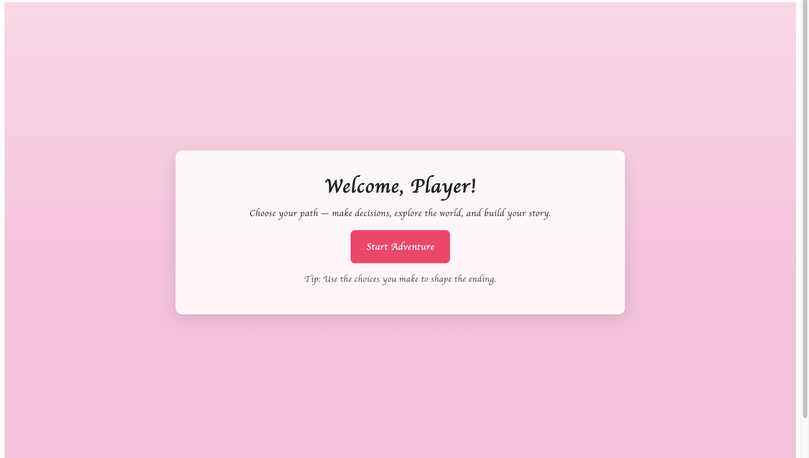

JASMINE CISNEROS
( SHE/HER )
Portfolio: LINK
About the Artist
Hello, my name is Jasmine Cisneros and I'm from a town called Modesto located in the central valley. I did two years of community college and then transferred to San Jose State University for a change of paste. I wanted to go through an artist evolution so having this change in environment really helped me form new perspectives and play around with new mediums.
Hello Gamer!
My name is Jasmine Cisneros and my work displays a variety from traditional to digital art. I hope experimenting and creating with a variety of mediums will help me discover a passion I can glue to. Art to me is trying out different techniques to keep my brain's creativity overflowing with new perspectives. In today's present time coding has given me windows of different opportunities where I can freely explore.
